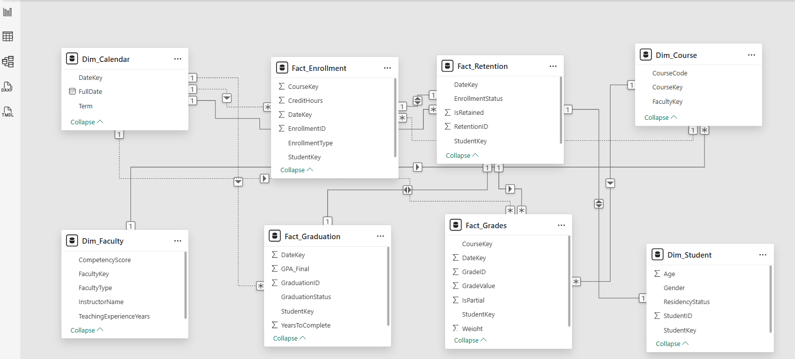

Work
Projects
Disaggregated Failure Rate Analysis: Beyond Demographics
Class failure rates were tracked institutionally, but reported as aggregate figures — masking the underlying factors driving student underperformance. The question was not just how many students were failing, but which conditions were most strongly associated with failure.
Existing reports did not disaggregate failure rates by demographic, engagement, or support dimensions, making it difficult to design targeted interventions. Funding Code was treated carefully — subcategories were aggregated to avoid overidentification of specific demographic groups while still capturing the financial dimension of student risk.
Using Python, I cross-referenced Cognos reports to build a multi-dimensional dataset spanning three indicator groups: Demographic Insights, Educational Engagement, and Background and Support. The analysis combined descriptive statistics, clustering, correlation analysis, and linear regression — with a deliberate bias reduction strategy that avoided individual identifiers and program-specific data.
The dataset was built by cross-referencing multiple Cognos reports — not a single extract. Each indicator group required separate data preparation before the dimensions could be combined for analysis. This foundation also serves as the dimensional structure for a future Power BI implementation, where each indicator group becomes a slicer enabling dynamic filtering.
The chart shows average failed classes per metric across three indicator groups — offering a balanced view among indicators, metrics, and submetrics.
In this recreation using synthetic data, the following patterns can be observed:
- Trend: Steady increase from Residency (2.39) to Funding Code (3.37) across all three groups.
- Demographics: Age Range (2.52) emerges as the most significant demographic factor.
- Engagement: Shaped primarily by Semester (2.74) and Previous Standing (2.89).
- Background & Support: Funding Code (3.37) and Catchment Area (2.95) show the highest average failure rates.

Financial circumstances, represented by Funding Code, emerged as the strongest predictor of class failure — stronger than gender, age, or residency status. This challenges assumptions that demographic identity is the primary risk factor, and points toward financial support systems as a higher-leverage intervention point.
This analytical framework applies directly to healthcare (readmission risk), HR (employee turnover), and credit risk modeling — any domain where disaggregated risk analysis can identify systemic factors behind individual outcomes.
Analysis developed independently within an institutional reporting role at a post-secondary institution in Canada. Recreated with synthetic data for portfolio purposes.
Retention Dataset Audit & ETL Transformation: From Wide Format to BI-Ready Structure
Wide-format datasets are the standard output of legacy administrative systems — efficient for storage and transactional reporting, but structurally limited for dynamic BI analysis. This case documents the audit and transformation of a retention dataset typical of Ontario post-secondary institutions: 985 rows and 33 columns, where semester-retention values are embedded directly in column names rather than stored as rows.
The audit process began by mapping the dataset composition: five descriptive columns (academic year, cohort term, program, campus, ministry codes) followed by 18 retention columns encoding both the semester number (1-6) and student type within the column name itself. This wide structure, while readable as a static report, prevents dynamic filtering by semester or student type without creating individual measures for each column.
Wide-format structure where each semester and student type occupies a separate column — 18 retention columns embedded in column names, making dynamic slicing in Power BI impractical:
| academic_year | cohort_term | program_name | campus | sem1_retained_total | sem1_retained_domestic | … | sem6_retained_international |
|---|---|---|---|---|---|---|---|
| 2026 | 202508 | [Program] | Campus A | 26 | 26 | … | 0 |
985 rows x 33 columns — 18 of which are semester-retention values embedded in column names (SEM1-SEM6 x Total / DOM / INT)
Using Python, the dataset was unpivoted from wide to long format — extracting the semester number from column names into a dedicated field. The result reduces 33 columns to 6, making the data natively compatible with Power BI slicers and DAX measures. Demographic dimensions are added separately via foreign key joins:
| academic_year | cohort_term | program_name | campus | semester | students |
|---|---|---|---|---|---|
| 2026 | 202508 | [Program] | Campus A | 1 | 26 |
| 2026 | 202508 | [Program] | Campus B | 2 | 0 |
| … | … | … | … | … | … |
Long format — one row per program, campus, and semester. What previously required 18 static measures becomes a single Students field.
A foreign key was constructed to enable joins with dimension tables — adding demographic, program, and enrollment context without embedding it in the base retention structure. This separation of concerns keeps the retention layer clean and scalable as additional data sources are connected.
Institutional enrollment data is typically aggregated at the program-cohort level, not at the individual student level. To support cohort tracking across semesters, the dataset was restructured using enrollment data as the foundation — making it possible to distinguish organic retention from other enrollment movements that aggregate reporting does not capture by default. Cohort-level program tracking is developed further in Case 2.
A long-format structure ready to calculate institutional and program-level retention rates dynamically — with a foundation that scales to include additional dimensions as data sources are connected via foreign keys. What previously required 18 static measures becomes a single analytical layer adaptable to any reporting need.
Analysis developed independently within an institutional reporting role at a post-secondary institution in Canada. Dataset structure illustrated with synthetic data for portfolio purposes.
Cohort Attribution Audit: Resolving Hidden Bias in Retention Metrics
Institutional retention is often reported as an aggregate figure, assuming a linear progression where "Semester 1" represents the same starting point for all records. This audit identified a critical Attribution Bias: the mixing of true freshmen with internal transfer students within program-level cohorts.
The conflict arises from mismatched granularity. While an "Institutional Cohort" correctly tracks a student's first entry to the college, a "Program Cohort" often mislabels internal transfers as new students. This ignores the academic maturity and survival traits of transfers, who enter advanced semesters without facing the high-risk barriers of the true first year.
Comparison of data integrity status across analysis levels. The current model assumes a linear path that does not exist for 15-20% of the population:
| Analysis Level | Cohort Definition | Data Integrity Status |
|---|---|---|
| Institutional | First entry to University | VALID |
| Program-Specific | Entry to specific Major | INCONSISTENT |
The lack of data atomicity triggers a domino effect across institutional KPIs, leading to skewed strategic decisions:
- Retention Inflation: Transfers (higher success probability) artificially boost averages, masking the real dropout rate of vulnerable freshmen.
- Time-to-Degree Distortion: Programs appear more efficient by "importing" graduates who completed 50% of their credits in other departments.
- Resource Misallocation: Budget for first-year support is under-prioritized because aggregated data suggests a healthy performance.
I proposed a transition toward Data Atomicity to restore system integrity. This framework enables dynamic segmentation without losing historical context:
- 1. Dual Cohort ID: Separate identifiers for
Entry_Cohort_InstitutionalandEntry_Cohort_Program. - 2. Origin Flags: Mandatory classification as
First-timeorTransfer-in. - 3. Academic Seniority: Normalizing semesters based on "Credits Completed" rather than calendar time.
The "Cohort Contradiction" is a structural data flaw applicable to any sector where aggregated reporting masks the origin or lifecycle of the subject.
- Retail (Churn Analysis): Mixing new customers with reactivated users inflates acquisition success and masks the failure of new-user growth strategies.
- Finance (Accounts Receivable): Labeling refinanced old debt as "new debt" conceals long-term credit risk and distorts cash flow health.
- Mining (Resource Recovery): Aggregating ore grade data across extraction points masks low-yield zones, leading to inefficient processing and inflated forecasts.
Audit developed independently within an institutional reporting role. Findings represent original analytical work on data integrity and cross-industry logic application.
From Audit to Implementation: Atomic Journey Reconstruction
This case is the direct implementation of the Cohort Attribution Audit. The audit identified the structural flaw — misattributed cohort labels masking 15–20% of enrollment events. This case documents how that finding was resolved in practice: a flag pipeline built on the raw enrollment file that reconstructs every student trajectory without modifying the source data.
Institutional enrollment data arrives as a flat transaction file. Each row represents a student-program-semester record, but nothing in the raw data distinguishes a student who dropped out from one who transferred programs, completed their credential, or simply repeated a semester. Aggregate retention formulas — built on Sem N − Sem N+1 subtractions — collapse these distinct events into a single number, hiding the destination.
Rather than filtering or removing records, the transformation was applied directly on top of the raw enrollment file. Every transaction was preserved and labeled through a flag architecture — eight boolean columns that reconstruct the full student lifecycle without altering the audit trail.
The flags enforce a conservation identity at every semester transition: Started = Retained + Moving + Pathway + Incomplete. This identity is what subtraction-based formulas cannot guarantee. A subtraction hides where a student went. A flag reveals it.
Eight boolean columns reconstruct the full student lifecycle. Each flag represents a distinct institutional event:
| Flag | Trigger | Event Type |
|---|---|---|
is_transfer_in | Cohort = 0 | Entry without Semester 1 |
is_repeating | Same semester in a later term | Stalled progression |
is_moving | Left program incomplete → new program | Loss event |
is_pathway | Completed program → new program | Voluntary continuation |
is_subsequent_program | Student had a prior program | Multi-program trajectory |
is_program_incomplete | No return, program ended, not completed | Confirmed attrition |
is_final_record | Latest row per Student + Program + Cohort | De-duplication anchor |
student_completed | Max Semester = Program Length | Completion status |
The flags enforce an accounting rule at every semester transition. Every student that starts a semester has exactly one outcome:
This identity is what traditional retention formulas cannot guarantee. A subtraction hides the destination. A flag reveals it.
Applied at Cohort + Program + Campus + Semester level, the flags produce a flow table where every student is accounted for across the full program lifecycle:
| Cohort | Program | Campus | Semester | Started | Retained | Moving | Pathway | Incomplete | Transfer_In |
|---|---|---|---|---|---|---|---|---|---|
| 202408 | Business Admin | A | 1 | 45 | 38 | 3 | 0 | 4 | 0 |
| 202408 | Business Admin | A | 2 | 38 | 35 | 1 | 2 | 0 | 2 |
| 202408 | Business Admin | A | 3 | 35 | 33 | 0 | 0 | 2 | 0 |
| 202408 | Business Admin | A | 4 | 33 | 33 | 0 | 33 | 0 | 0 |
45 students started. 4 did not return after Semester 1. 3 moved to another program. By Semester 4, the 33 who remained completed the program — all flagged as is_pathway, continuing into their next credential.
The flag architecture produces two complementary views from the same source — consistent by construction, no reconciliation required:
Longitudinal trend reporting by program and cohort. How did cohort 202408 perform over time?
Dimensional drill-down and audit trail. Who left, why, and where did they go?
In Power BI this translates to a retention map — Started → Retained → Pathway by cohort. The difference between is_moving and is_program_incomplete is not visible in a retention percentage, but it determines whether a student represents a resource allocation failure or a natural academic progression. That distinction drives different interventions, different budgets, and different strategic decisions.
This is not a statistical model. It is a formula architecture: reproducible, auditable, and built to be wrong-proof. Every flag is independently verifiable, every outcome traceable to a specific row. The pipeline can be re-run on any future dataset and produce consistent results by construction — applicable to any domain where lifecycle events are currently collapsed into aggregate subtraction metrics.
A Power BI report built on this flag layer is currently in development. It will be published here as a companion to this case.
[ IN CONSTRUCTION ]
Analysis developed independently within an institutional reporting role at a post-secondary institution in Canada. Dataset structure illustrated with synthetic data for portfolio purposes.
Student Retention Analysis: From Static Reports to Interactive Dashboards
Retention reports existed but were not fully actionable — visuals were static screenshots embedded in Word documents, making year-over-year comparison difficult and limiting accessibility for non-technical stakeholders. The underlying dataset added complexity: over 20,000 rows, nearly 50 columns, and unidentified transfer students that distorted program-level metrics.
The source dataset combined dimensions and calculated fields with coding conventions that evolved over time. Records could not be reliably linked back to the original cohort, and transfer students were not separately identified — making it impossible to distinguish institutional retention from program-level retention without first resolving these structural issues.
Rather than rebuilding from scratch, I first understood the existing calculation logic — how retention rates were computed, how cohorts were tracked, and critically, how institutional retention differed from program-level retention. From there, I redesigned the visualization applying churn analysis principles: the student as the equivalent of a customer, semester-to-semester retention as the equivalent of churn.
Transfer students needed to be identified and separated from the original cohort to produce meaningful program-level metrics. The redesign was iterative — each version tested against the question: can a non-technical stakeholder act on this?
An improved tabular view tracking cohort progression across semesters (Semester 1 through Semester 5) on the horizontal axis, with retention percentages on the vertical dimension, segmented by domestic (RES) and international (NRES) students. The staircase effect makes attrition patterns immediately readable.
This format represented a significant improvement in accessibility over previous reports, though it remained static. It served as the analytical foundation for the subsequent Power BI implementation, which introduced dynamic filtering and historical benchmarking.

The same underlying data, presented with the right structure, became a tool for decision-making rather than a reporting obligation. The vertical axis represents time — each row is a cohort intake. The horizontal axis tracks semester progression. The staircase effect is intentional: newer cohorts have fewer semesters of data, while older cohorts show the full retention trajectory. Stakeholders could identify programs with declining retention, compare cohorts, and segment by domestic and international students — without requiring analytical expertise.
Currently building a Power BI implementation enabling dynamic filtering by population and campus, with institutional and program-level retention presented as separate metrics.
This analytical approach mirrors churn analysis in business intelligence — applicable to SaaS customer retention, patient follow-up in healthcare, employee retention in HR, or client persistence in financial services.
Visual recreated with synthetic data for portfolio purposes. Analysis developed independently within an institutional reporting role at a post-secondary institution in Canada.
Academic Standing Transition Matrix: Measuring the Real Impact of Early Alerts
Institutions implement academic alert systems but rarely have a method to measure whether those interventions actually changed student trajectories. Reports show who is at risk — but not whether the system moved them.
Using Python, I redesigned the academic standing dataset by assigning each student two states: their standing at the start of the semester and their standing at the end. This creates a transition matrix — borrowed from data science and actuarial modeling — that makes movement between states visible and measurable.
The transformation also serves as a foundation for building risk indices when enriched with campus, demographic, program, and course-level parameters — enabling contextual aggregation that reduces individual identification bias.
The heatmap shows student transitions across five academic standing states — Academic Intervention, Academic Probation 1-3, and Good Standing. Each cell represents the number of students who moved from one state (previous semester) to another (current semester). The diagonal represents students who maintained their standing. Off-diagonal cells reveal movement in both directions.

The transformation produces a three-column dataset — ready to load directly into Power BI as a matrix table or Sankey chart:
| Previous_Standing | Current_Standing | Student_Count |
|---|---|---|
| Academic Intervention | Academic Intervention | 31 |
| Academic Intervention | Academic Probation 1 | 14 |
| Academic Intervention | Academic Probation 2 | 3 |
| ... | ... | ... |
| Good Standing | Good Standing | 1,985 |
Sample structure — synthetic data for illustration purposes.
Applying the same transformation consistently across academic periods generates historical metrics — enabling the institution to track whether recovery rates are improving and whether interventions actually shifted trajectories over time.
When results are aggregated by context — program, campus, semester, or demographic group — rather than at the individual level, the matrix reduces identification bias. Risk becomes a property of the learning environment, not a label assigned to the student. This allows institutions to ask a fundamentally different question: not which students are failing, but under which conditions does failure concentrate.
This dataset structure feeds directly into Power BI as a Sankey chart, enabling dynamic filtering by campus, program, demographics, and semester. The model below is a working implementation built on mock data — interact with it directly:
Live embed — mock data for portfolio purposes. Built with Power BI Publish to Web.
Analysis developed independently within an institutional reporting role at a post-secondary institution in Canada. Recreated with synthetic data for portfolio purposes.
Comprehensive Program Report: From Static Documents to BI Dashboard
Many educational institutions are required to conduct Comprehensive Program Reviews (CPR) — a systematic, multi-year evaluation of program effectiveness, student outcomes, and strategic alignment. Historically delivered as static Word or PDF documents, these reports presented data descriptively with no analytical framework. This pilot applied a market intelligence lens to four programs, using data from a Student Information System (SIS) and government labour market sources to assess competitive positioning, enrolment conversion, and graduate employment outcomes.
The existing reporting format had three core limitations. First, raw tables with no aggregation or contextual framing — data existed but said nothing. Second, no analytical questions — data was presented without a narrative or decision-making lens. Third, no interactivity — stakeholders could not explore the data by program, year, or demographic. The result was a document that described what happened but offered no insight into why it mattered or what to do next.
A Business Intelligence framework was applied to transform static reporting into an interactive, metrics-driven dashboard — structured around four analytical questions:
- Market Positioning — How does the institution compare against provincial competitors in confirmed applications and enrolment?
- Conversion Efficiency — What percentage of confirmed applicants actually enrol, and how does this vary by program?
- Student Profile — Who are the students, and has that profile shifted over time?
- Labour Market Alignment — What is the employment outlook and wage trajectory for graduates?
Four core metrics structure the analysis: Market Share, Conversion Rate, Withdrawal Rate, and Provincial Average — each calculated dynamically and responsive to active filters.
Metrics developed:
| Metric | Formula |
|---|---|
| Market Share | Home Institution / Provincial Total |
| Conversion Rate | Enrolment / Confirmed Applications |
| Withdrawal Rate | Withdrawn / (Registered + Withdrawn) |
| Provincial Average | Provincial Total / Distinct College Count |
| Top Competitor | TOPN(1, excluding Home Institution, by volume) |
| Dominant Student Profile | Most frequent value per demographic dimension |
Dynamic filtering patterns:
- Context-aware measures — metrics respond to Transaction slicer using SELECTEDVALUE
- Forced inclusion — TOPN + BLANK() pattern ensures Home Institution always appears in competitive rankings
- Cross-table filtering — CALCULATETABLE + IN filters student demographics through enrolment records
- Field Parameters — single slicer dynamically switches the demographic dimension displayed
- Dynamic titles — SWITCH + SELECTEDVALUE generates context-aware titles based on active filters
This pilot was built without a formal data mart — sourced, transformed, and modelled directly in Power BI. While functional as a proof of concept, a production implementation would require a structured data mart. This pilot served as the requirements specification for that architecture — defining the analytical questions, metrics, and data relationships a data mart would need to support.
Working implementation built on anonymized mock data — interact with it directly:
Live embed — anonymized mock data for portfolio purposes. Built with Power BI Publish to Web.
Redesigned static reporting visuals were subsequently adopted in institutional CPR and similar reports. This pilot extended that work — adding interactivity, analytical metrics, and a BI framework as a proof of concept for a data-driven approach.
The analytical patterns developed here are directly transferable to any domain involving program or product performance benchmarking. The core framework — market context → conversion efficiency → customer profile → outcome alignment — applies wherever organizations need to move from descriptive reporting to analytical decision-making.
- Healthcare — comparing service utilization rates across regional providers to identify underperforming care pathways.
- Retail — benchmarking store conversion and withdrawal rates against regional or national averages to guide resource allocation.
- HR Analytics — tracking employee retention and demographic shifts across departments to identify systemic turnover patterns.
- Financial Services — monitoring product conversion funnels (application → approval → activation) to optimize acquisition strategy.
Pilot presented to institutional leadership as a proof of concept. Dashboard rebuilt with anonymized mock data for portfolio purposes.
Strategic Enrolment Management: From Static Reports to BI Dashboard
Strategic Enrolment Management (SEM) is a data-driven framework used by educational institutions to attract, retain, and graduate students effectively. SEM decisions — such as program capacity adjustments, recruitment targeting, and retention interventions — rely heavily on enrolment data spanning multiple years and dimensions. Historically, this analysis was delivered through static Word or PDF reports presenting raw tables without synthesis or analytical framing. This pilot assessed the overall health of an institution's enrolment pipeline using internal cohort data, provincial waitlist records, and regional catchment data.
The existing reporting format had three core limitations. First, data was presented as raw tables across disconnected reports with no synthesis. Second, numbers were shown without a decision-making lens — no analytical questions were being asked. Third, stakeholders could not explore data by program, campus, year, or student type. The result was a reporting ecosystem that described what happened but offered no insight into why it mattered or what to do next.
A Business Intelligence framework was applied to transform static enrolment reports into an interactive, multi-dimensional dashboard — structured around five analytical questions that address demand, capacity, trends, student retention, and competitive positioning:
- Unmet Program Demand — Which programs have more qualified applicants than available seats, and where do unplaced students go?
- Capacity Pressure — Are we expanding capacity at the pace of demand, and which programs face the highest competition for available seats?
- YOY Enrolment Decline — Which programs are experiencing sustained enrolment decline, and how severe is the trend?
- Student Loss by Stage — How many students never arrive after enrolling, and how many start but don't complete their program?
- Catchment Area Analysis — How many local students are enrolling in competitor institutions — for programs we offer and programs we don't?
Seven metrics structure the analysis — each calculated dynamically and responsive to active filters.
Metrics developed:
| Metric | Formula |
|---|---|
| Waitlisted per Available Seat | Total Waitlisted / Max Seats |
| Priority Loss Rate | 1st & 2nd Choice Lost / 1st & 2nd Choice Waitlisted |
| Demand Gap | 1st & 2nd Choice Waitlisted − Max Seats |
| YOY Decline (Variable) | Average of years with actual decline |
| YOY Decline (Fixed) | Sum of negative YOY changes / 10 years |
| No-Show Rate | 1 − (SEM1 Enrolment / Total Start) |
| Final Semester Attrition | 1 − (Final SEM Enrolment / SEM1 Enrolment) |
Dynamic filtering patterns:
- Cross-filtering — bar chart selection dynamically updates line chart to show program-level trends
- Context-aware TopN — TOPN + BLANK() pattern ensures relevant programs always appear regardless of ranking position
- Student type toggle — slicer switches between All, Domestic, and Indigenous student views across all metrics
- 3-Year Summary — DAX pattern using MAXX + TOPN + SUMMARIZE to surface the most impacted program over the last 3 years
This pilot was built without a formal data mart — data was sourced from multiple disconnected systems and modelled directly in Power BI. This pilot defined the analytical requirements a production data mart would need to address.
Working implementation built on anonymized mock data — interact with it directly:
Live embed — anonymized mock data for portfolio purposes. Built with Power BI Publish to Web.
Visualizations developed during the exploratory phase of this work were subsequently adopted in institutional SEM and related static reports. This pilot extended that work — adding interactivity, analytical metrics, and a BI framework as a proof of concept for a data-driven approach to enrolment management.
The analytical patterns developed here are directly transferable to any domain involving demand forecasting, capacity planning, and customer pipeline analysis. The core framework — demand → capacity → trend → attrition → competitive positioning — applies wherever organizations need to move from descriptive reporting to strategic decision-making.
- Healthcare — tracking patient waitlists, capacity utilization, and no-show rates by clinic or service to optimize resource allocation.
- Retail / Hospitality — analyzing booking demand versus available inventory and identifying lost customers by region.
- HR Analytics — monitoring candidate pipeline attrition from application to hire, and regional talent competition.
- Financial Services — tracking product application funnels and identifying where potential customers drop off before conversion.
Visualizations adopted in institutional reports. Dashboard rebuilt with anonymized mock data for portfolio purposes. Numerical values are randomized but calibrated to reflect realistic institutional scales.
Early Alert System (Risk Assessment): A Multilevel Business Intelligence Ecosystem
The Ontario postsecondary sector faces a critical barrier: functional data silos and a lack of identity-based administrative data (HEQCO 2022). Current practices—often relying on static, disconnected reports—create analytical silos and inherent bias by focusing exclusively on the student (Micro level) in isolation. This fragmented approach fails to identify systemic bottlenecks and the diverse challenges of underrepresented populations, ignoring the interplay between the learner, the curriculum, and the institution.
More than a simple warning tool, this ecosystem transforms limited administrative data into a comprehensive analytical engine supporting multiple institutional workstreams. This framework bridges data gaps through a specialized Multidimensional Data Mart that integrates Historical, Real-time, and Forecast data.
- Student Success: Early Warning Systems (EWS) and intervention tracking.
- Enrollment Management: Real-time monitoring and trend forecasting.
- Academic Quality: Identification of curricular bottlenecks and teaching performance.
- Equity & Access: Identity-based reporting and bias-reduced assessments aligned with provincial standards.
The system consolidates data from institutional warehouses through an ETL process into a specialized Educational Data Mart, implemented as a Constellation Schema that integrates three types of information — historical, real-time, and forecast data — segmented into multidimensional domains covering partial grades, enrollment trends, teaching competencies, retention, and graduation outcomes. Designed for monitoring, following up, predicting, and analyzing results, the analytical layer feeds into an interactive Power BI environment where threshold-based alerts trigger early intervention workflows coordinated across advisors, faculty, and student success teams.

The Data Mart is implemented as a Constellation Schema in Power BI — four fact tables (Enrollment, Retention, Grades, Graduation) sharing dimension tables across Student, Faculty, Course, and Calendar. This structure enables cross-domain analysis without data duplication.

The architecture is strategically designed to answer the four critical questions for equitable access:
- Who: Student Demographic Dimensions (monitoring).
- What: Academic Performance (Grades & Enrollment) (following up).
- Where/How: Structural Factors (Teaching & Curriculum) (predicting).
- Outcome: Long-term Success (Graduation & Retention) (analyzing results).
The multilevel nested analytics approach is validated by research from Politecnico di Milano, acknowledging that dropout probability is highly conditional on program-specific variables. Additional frameworks draw on UCSC-Chile's multilevel model and Purdue University's Course Signals risk predictor research.
Independently developed proposal based on validated research. Not institutionally adopted — the initiative and design represent original analytical work developed within an institutional reporting role at a post-secondary institution in Canada.
Contact
Get in Touch
Open to opportunities in data analytics, business intelligence, and institutional research across Canada.